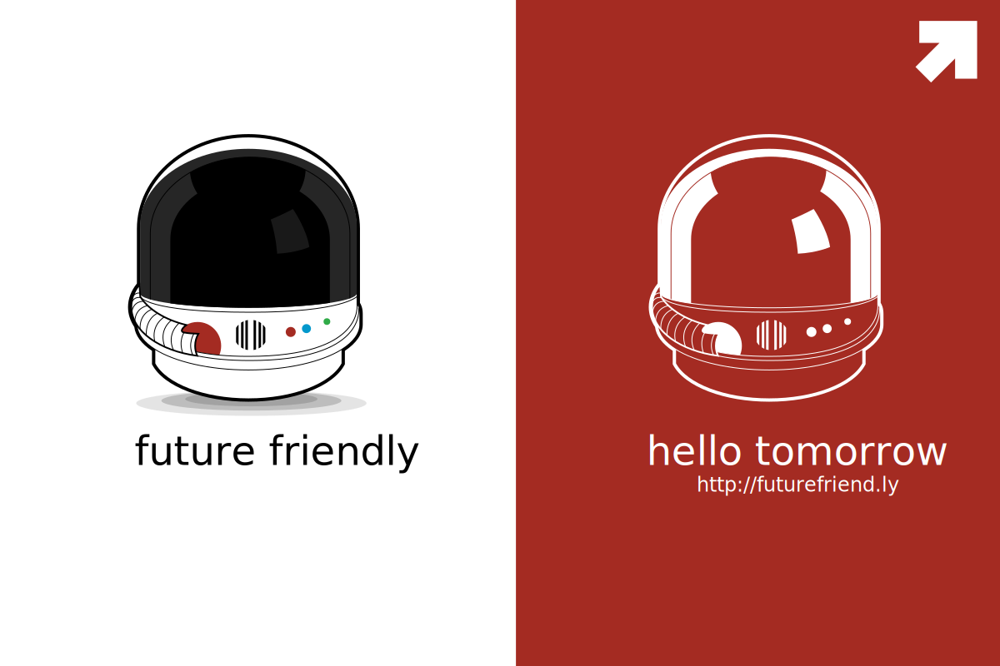

<footer class="site-footer">
  <div class="group">
    <nav>
      <ul class="nav">
        <li {% if page.slug == "home" %} class="active"{% endif %}>
          <a href="/index.html">
            <span>Home</span>
          </a>
        </li>
        <li {% if page.slug == "about" %} class="active"{% endif %}>
          <a href="/about.html" class="tooltip-right">
            <span>About</span>
          </a>
        </li>
        <li {% if page.slug == "portfolio" %} class="active"{% endif %}>
          <a href="/portfolio.html">
            <span>Portfolio</span>
          </a>
        </li>
        <li {% if page.slug == "blog" %} class="active"{% endif %}>
          <a href="/blog.html" class="tooltip-right">
            <span>Blog</span>
          </a>
        </li>
      </ul>
    </nav>
    <aside role="complementary">
      <p>My name is Nic Marson. I'm from Portland, OR. I build websites.</p>
      <h6 class="breakdown-title">As a <b>Developer</b></h6>
      <p>I write adaptive code for dynamic environments.</p>
      <h6 class="breakdown-title">As a <b>Designer</b></h6>
      <p>I design UI based on user research.</p>
    </aside>
    <nav class="social-links">
      <ul class="nav">
        <li>
          <a href="mailto:nicmarson@gmail.com" class="social tooltip-right">
            <span>Email <small class="tooltip">nicmarson@gmail.com</small></span>
            <i class="icon typcn typcn-mail"></i>
          </a>
        </li>
        <li>
          <a href="http://github.com/nicmarson/" class="social tooltip-right">
            <span>Github <small class="tooltip">github.com/nicmarson</small></span>
            <i class="icon typcn typcn-social-github"></i>
          </a>
        </li>
        <li>
          <a href="http://twitter.com/nicmarson/" class="social tooltip-right">
            <span>Twitter <small class="tooltip">twitter.com/nicmarson</small></span>
            <i class="icon typcn typcn-social-twitter"></i>
          </a>
        </li>
        <li>
          <a href="http://www.linkedin.com/in/nicmarson" class="social tooltip-right">
            <span>LinkedIn <small class="tooltip">linkedin.com/in/nicmarson</small></span>
            <i class="icon typcn typcn-social-linkedin"></i>
          </a>
        </li>
        <li>
          <a href="http://www.facebook.com/nicmarson" class="social tooltip-right">
            <span>Facebook <small class="tooltip">facebook.com/nicmarson</small></span>
            <i class="icon typcn typcn-social-facebook"></i>
          </a>
        </li>
      </ul>
    </nav>
  </div>
  <div class="group">
    <a href="http://futurefriend.ly" class="futurefriendly"></a>
    <p class="copyright">&copy; 2014 <span>Nic <b>Marson</b></span></p>
  </div>
</footer>